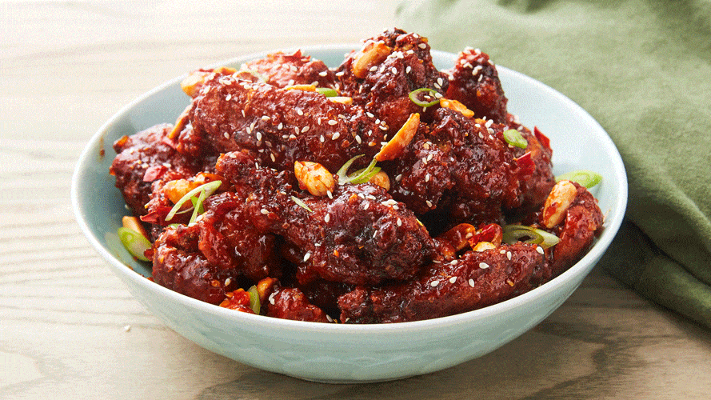

Korean Spicy Chicken

Description
I know you’re reading this because you love Korean fried chicken! It’s such a culinary pleasure to bite through the well-seasoned, crunchy crust that reveals juicy chicken underneath. This Korean fried chicken recipe will give you that thin, crispy and crunchy crust along with two delicious sauce options — soy garlic and red spicy sauce!
Also known as “the other KFC,” Korean fried chicken is highly popular in and outside of Korea. Over the last three or four decades, the Korean fried chicken industry has grown exponentially. There are fast food fried chicken chains and mom-and-pop places in uncountable numbers, each with their own techniques, secret ingredients and variations.
Among many delicious variations of fried chicken in Korea, yangnyeom chicken is one of the most popular ones. Literally meaning “seasoned chicken,” yangnyeom chicken is fried chicken smothered in a spicy red sauce. The ingredients used in yangnyeom sauce vary widely, including gochujang, ketchup, hot sauce, strawberry jam, etc. It started out being thick and heavy, but the current trend is a thinner, lighter sauce.
Source: https://www.koreanbapsang.com/yangnyeom-chicken-korean-fried-chicken
Ingredients
- 2 pounds chicken wings (about 16 drumettes and wingettes)/li>
- 1.5 teaspoons salt (use 1 ts if using table salt)
- pinch of black pepper
- 1 teaspoon grated ginger
- 4-5 cups oil for frying about 2-inch deep
Steps
- Wash chicken wings, and drain thoroughly. Mix with the salt, pepper, and ginger. Let it sit in the fridge for 2 hours or longer (overnight to 24 hours)
- Combine all the sauce ingredients of your choice and stir well. Boil over medium heat until it thickens slightly, about 4 to 5 minutes. Turn the heat off.
- If using the starch only, add the potato (or cornstarch) to the chicken, and rub it onto each wing well to coat evenly. Set aside.
- Add the oil to a deep fryer, wok, or large pot. Heat the oil to 320°F (up to 330°F). Drop the chicken in the oil, one piece at a time. If using wet batter, dip each piece in the wet batter with tongs and shake off excess batter before dropping the chicken in the oil. Fry them in two batches. Cook until lightly golden, about 6 minutes, depending on the size of the chicken wings. Remove them with a wire skimmer or a slotted spoon. Drain on a wire rack or in a large mesh strainer set on a bowl.
- You can either toss the fried chicken pieces in the sauce or hand-brush them. Sprinkle with the optional sesame seeds or chopped scallion to serve.